Tableau de bord
État de l'appareil en un coup d'œil : batterie, stockage, mémoire, affichage, version d'Android, niveau de correctif de sécurité et statut root.
Une interface graphique complète pour Android Debug Bridge : administration des applications, transfert de fichiers, shell interactif, journaux système, supervision des performances, recopie d'écran et connexion sans fil, sans saisie de commandes.
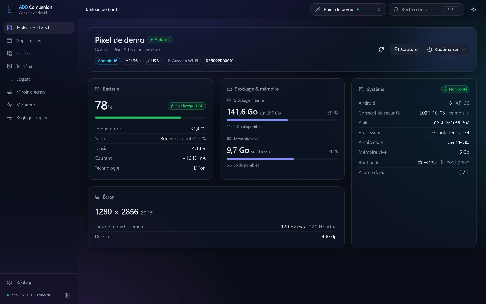
Les opérations courantes d'Android Debug Bridge, pour smartphones, tablettes et téléviseurs Android, en USB comme en Wi-Fi.
État de l'appareil en un coup d'œil : batterie, stockage, mémoire, affichage, version d'Android, niveau de correctif de sécurité et statut root.
Installation d'APK, APKS et XAPK par glisser-déposer, gestion des permissions, désactivation, nettoyage et désinstallation par lots.
Explorateur à double volet poste ↔ appareil, transferts suivis, aperçu des fichiers et accès root au système de fichiers.
Shell ADB interactif multi-onglets, session root, macros intégrées et personnalisables.
Journaux système en temps réel, filtrage par niveau, tag, application ou expression régulière, pause et export.
Supervision en temps réel : charge CPU par cœur, mémoire, températures et batterie ; gestionnaire de processus.
Affichage et contrôle de l'appareil via scrcpy, déployé automatiquement ; enregistrement et profil adapté au Wi-Fi.
Appairage par QR code ou par code, découverte mDNS, bascule USB → Wi-Fi et reconnexion automatique.
Captures réalisées avec des appareils de démonstration fictifs.
Inventaire complet des paquets installés, avec icônes, tailles et filtres.
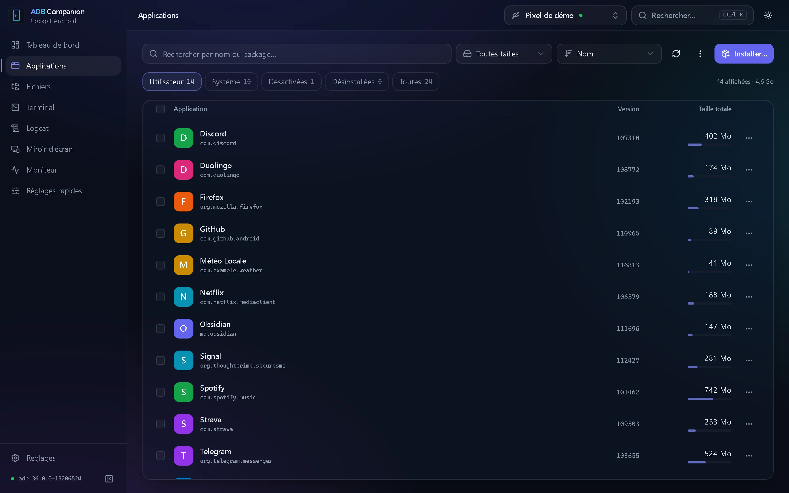
L'explorateur s'appuie directement sur le protocole de synchronisation d'ADB, sans passer par le shell.
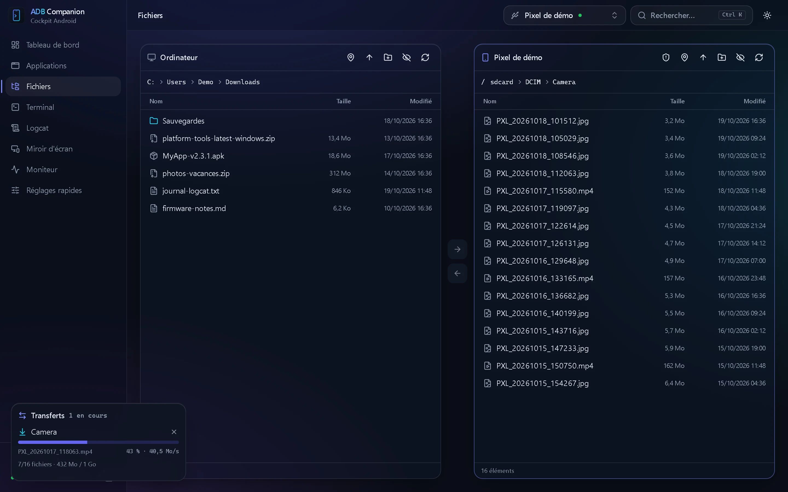
Émulation de terminal complète : couleurs, complétion, programmes plein écran et redimensionnement dynamique.
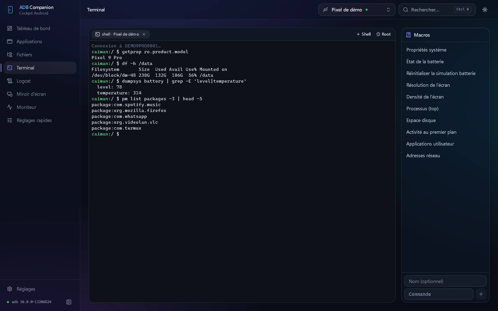
Affichage fluide quel que soit le débit ; la pause suspend réellement la collecte.
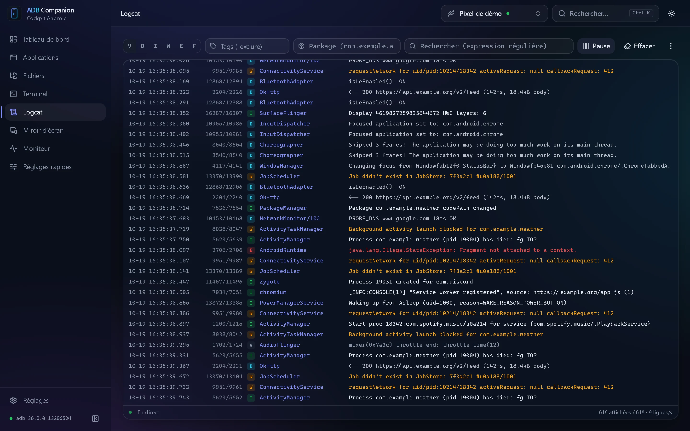
Historique de 1 à 30 minutes, échantillonnage de 1 à 5 secondes.
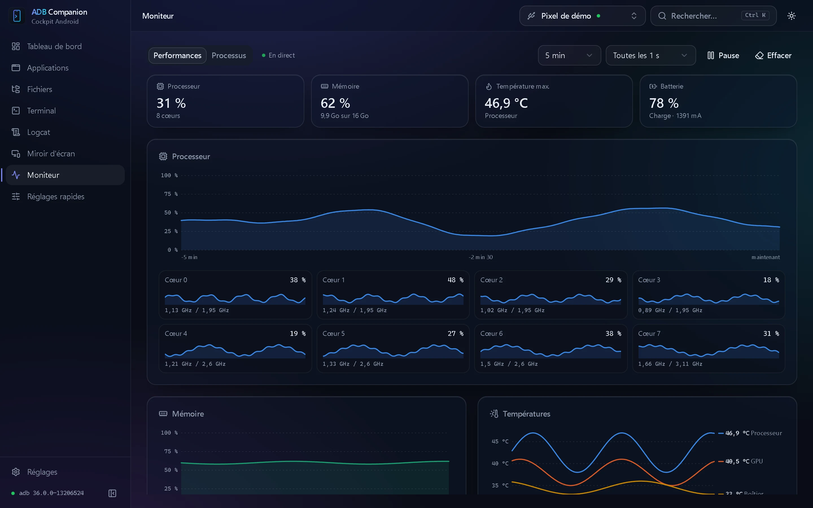
Connexion Wi-Fi sans saisie d'adresse IP ni de port.
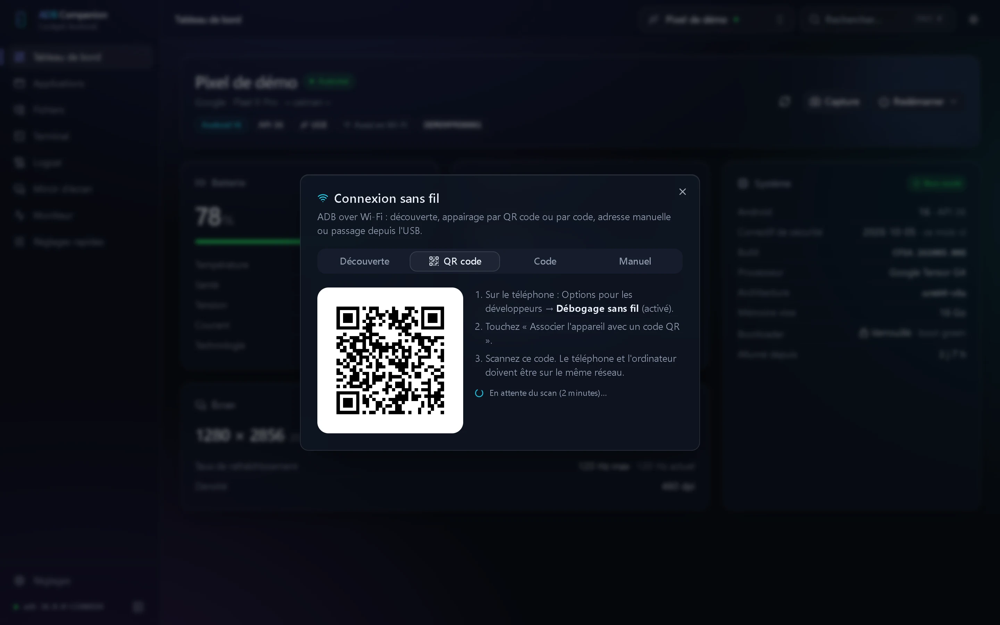
ADB Companion déploie et configure scrcpy automatiquement.
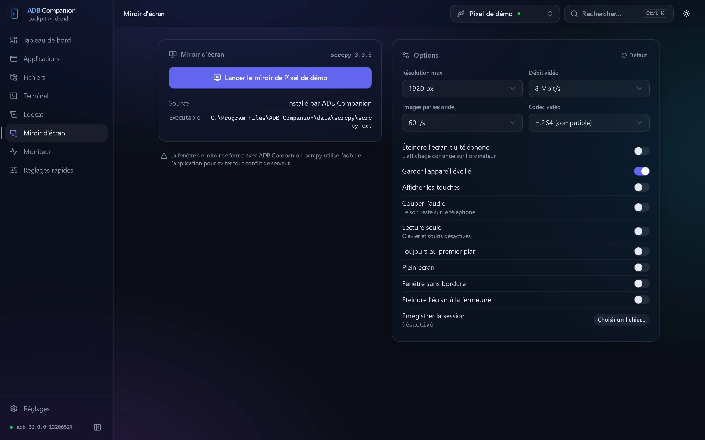
Les valeurs d'origine sont conservées : la fonction « Rétablir » restaure l'état initial de l'appareil.
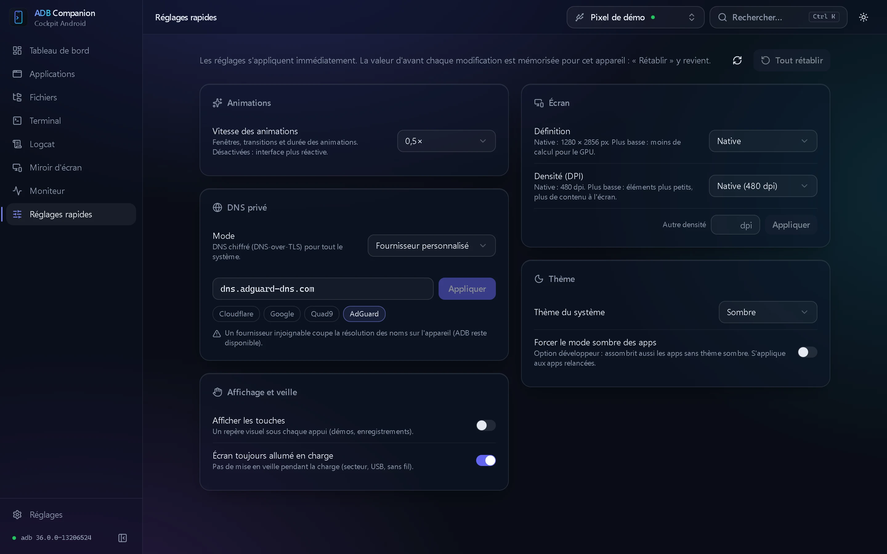
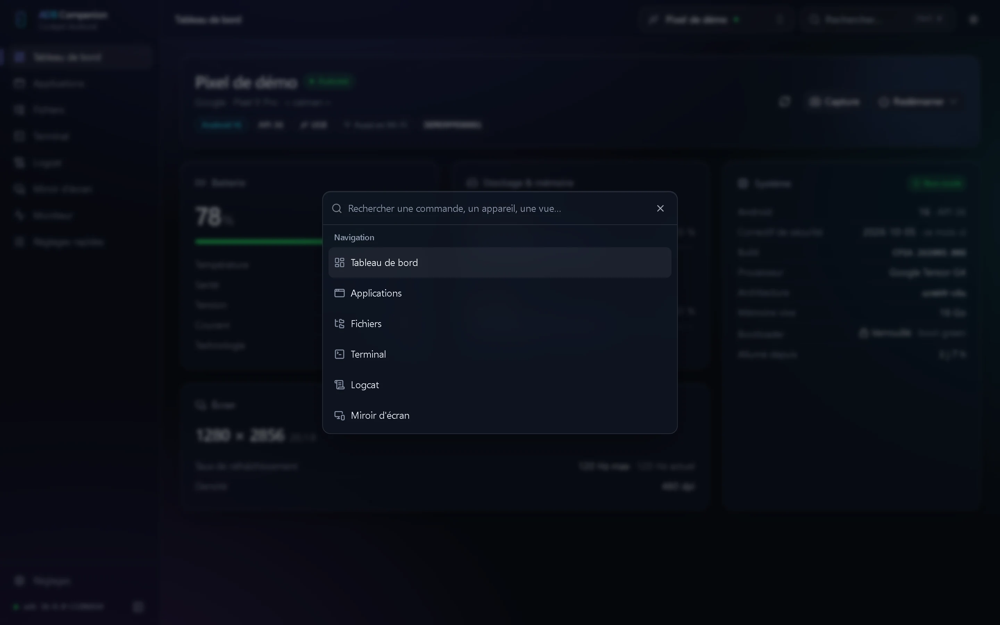
Le thème suit les préférences du système ou se définit dans les réglages ; l'effet de transparence peut être désactivé sur les postes moins puissants.
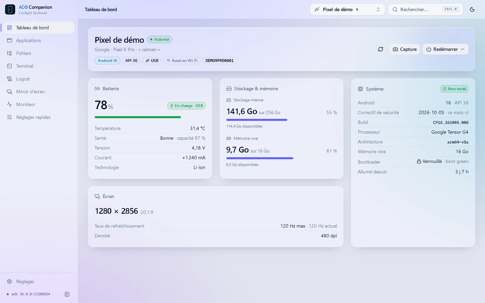
Installez l'application, puis connectez l'appareil avec le débogage USB activé : il est détecté automatiquement.
L'installeur n'est pas encore signé par un certificat de signature de code : SmartScreen le signale donc comme inconnu. Sélectionnez « Informations complémentaires », puis « Exécuter quand même ». Les mises à jour sont en revanche signées, et leur signature est vérifiée avant installation.
L'application n'est pas encore notarisée par Apple. Dans le dossier Applications, faites un clic droit sur ADB Companion, choisissez « Ouvrir » et confirmez. Utilisez le fichier aarch64 pour les Mac Apple Silicon (M1 et ultérieurs), x64 pour les Mac Intel.
Non. ADB Companion détecte une installation d'ADB existante (Android SDK, PATH…) ou propose de télécharger les Platform-Tools officiels de Google. scrcpy, utilisé pour la recopie d'écran, est déployé de la même manière.
Dans les paramètres Android, ouvrez « À propos du téléphone » et appuyez sept fois sur « Numéro de build » pour activer les Options pour les développeurs. Activez ensuite le « Débogage USB » (et le « Débogage sans fil » pour une connexion Wi-Fi), connectez l'appareil et autorisez l'empreinte de la clé RSA de l'ordinateur.
Non. L'accès root n'est exploité que pour certaines fonctions avancées (accès à l'ensemble du système de fichiers, session root du terminal, nettoyage du cache d'une application), lorsque le gestionnaire root l'accorde au shell.
Sous Windows, l'installation est portable : paramètres, journaux et outils téléchargés sont stockés dans le dossier data de l'application (l'installeur propose de le supprimer lors de la désinstallation). Aucune donnée n'est transmise : l'application ne se connecte à Internet que pour vérifier les mises à jour et, à votre demande, télécharger ADB ou scrcpy.
Une pré-version publiée à des fins de test : fonctionnalités en avant-première, stabilité non garantie. L'option « Versions expérimentales » (Réglages → Mises à jour) permet de les recevoir automatiquement.
L'utilisateur doit disposer des droits d'accès aux périphériques USB Android : installez les règles udev de votre distribution (android-udev-rules ou android-sdk-platform-tools-common selon les cas), ajoutez l'utilisateur au groupe correspondant (plugdev ou adbusers), puis reconnectez l'appareil.